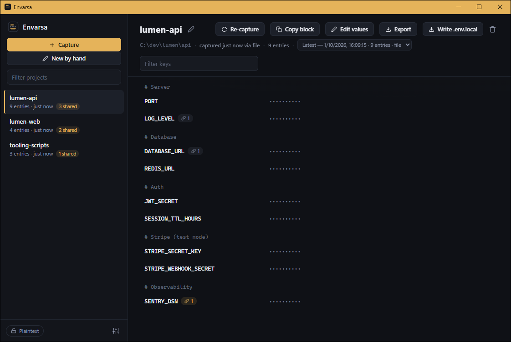
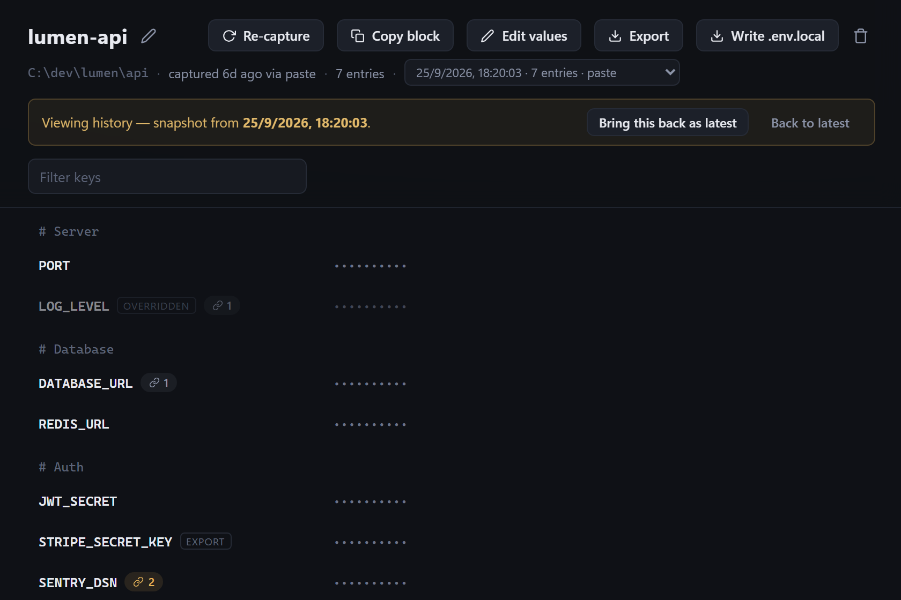
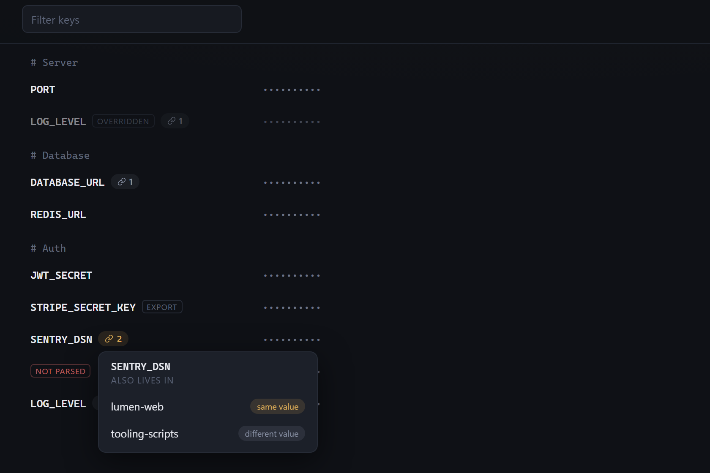
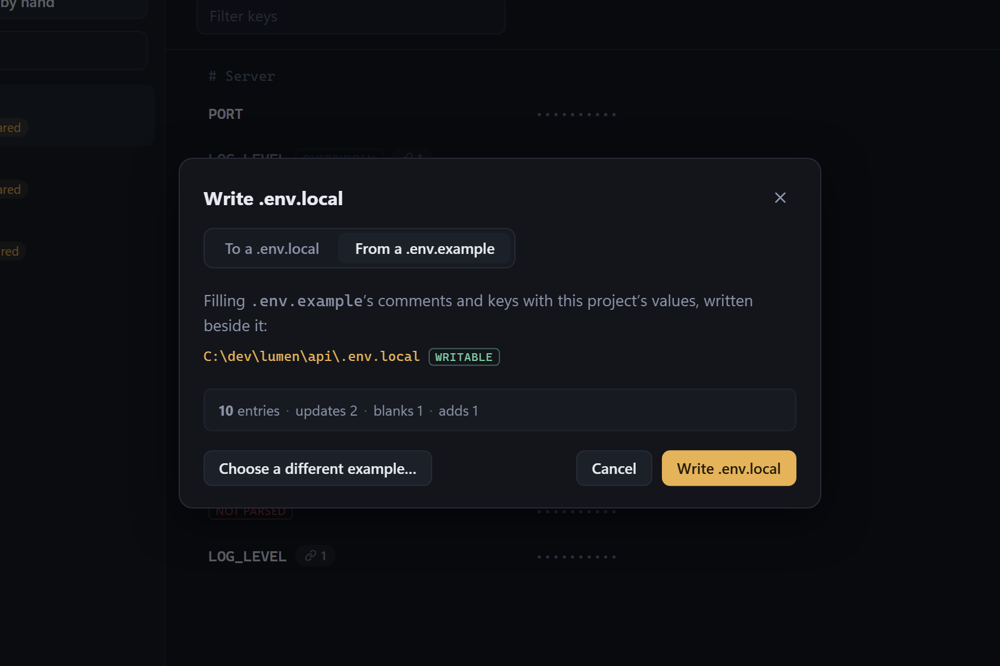

One place for all your .env files
Envarsa keeps a copy of each project’s .env file on your computer. You can find a value
months later, see which projects share a key, and write a working .env.local for a fresh
checkout. Nothing is uploaded anywhere.
Free and open source, for Windows 10/11 and Linux.

# the problem
.env files aren’t in git, so nothing backs them up
Every project has its own, on every machine you’ve used. Delete the folder and the values are gone. The same database URL ends up in several projects, and when you change it in one, the others go stale without anything telling you.
# what it does
What Envarsa does
Every project’s variables, in one library
Add a project by picking its .env file, pasting it, or dropping it on the window. Envarsa
keeps the file exactly as it was, comments included. Each time you add it again, the old version is
kept, so you can look back or restore it.

See where a key is shared, and whether it matches
When the same key appears in more than one project, Envarsa marks it and tells you whether the values match. If you rotate a database password in one project, you can see which others still have the old one.

Set up a fresh checkout from its .env.example
Point Envarsa at a project’s .env.example and it writes a .env.local
beside it, filling in every value it has and leaving the rest blank for you. You see a preview
first. It never writes to the example file itself.

# privacy
Your values stay on your computer
Nothing is uploaded
There’s no account and no server. Envarsa works entirely offline.
The only network request it can make is a check for new versions, and that’s off until you
turn it on in Settings. It asks GitHub (api.github.com) for the latest version number and
sends nothing else. Nothing downloads or installs itself.
Values stay hidden on screen
You see the keys. Each value stays hidden until you choose to show it.
Only one value shows at a time, and it hides again after 30 seconds or when the window loses focus.
Every value is hidden, even ones that look harmless like PORT, because Envarsa
doesn’t guess which ones are secret. Copying a single value sends it to the clipboard without
showing it.
Copied values clear themselves
The clipboard is wiped 30 seconds after you copy a value.
On Windows, copies also skip clipboard history (Win+V) and the cloud clipboard. Linux has no equivalent, so a clipboard manager such as Klipper or CopyQ keeps its own copy; clear it after copying a secret.
Your library is one file you can read
Plain JSON on your disk, with an optional passphrase.
The file lives in the app’s data folder: %APPDATA%\com.envarsa.app\ on Windows,
~/.var/app/dev.envarsa.Envarsa/data/ in the Flatpak. Every save writes a temporary file
and swaps it in, keeping the previous version as a .bak. If the file is ever damaged,
Envarsa offers the backup when it starts.
You can protect it with a passphrase in the standard
age format, which the age
command-line tool can also open. A lost passphrase can’t be recovered, which is why it’s
optional.
# faq
Questions
Does Envarsa change files in my projects?
Only when you ask it to write a .env.local, and only after showing you the file’s
path and a preview. It can merge values into an existing file or replace it. It never writes to
example files (.env.example, .sample, .template,
.dist) and never sets environment variables for running programs.
Can I use it without a .env file?
.env file?Yes. Create a project by hand and type keys, values and # comments into the editor.
Editing a project saves a new version and keeps the old one.
How do I move my library to another machine?
In Settings, export a copy, optionally protected with a passphrase, and import it on the other machine. Its projects are added to the library there; if a name already exists, you choose to replace, rename or skip it.
Is it free?
Yes. Envarsa is MIT-licensed and the source is on GitHub. It’s built with Rust and Tauri 2.
# download
Download Envarsa
Windows 10/11
Installer
Envarsa_x.y.z_x64-setup.exeInstalls for your user account, no admin needed. It doesn’t update itself; turn on the update check in Settings to hear about new versions.
Download installerBoth need the WebView2 runtime, which Windows 11 and up-to-date Windows 10 already have.
Linux
Flatpak
Envarsa_x.y.z_x86_64.flatpakDownload it, then run flatpak install --user ./Envarsa_x.y.z_x86_64.flatpak. It
doesn’t update itself yet. Uninstalling with --delete-data also deletes your library,
so export a copy first.